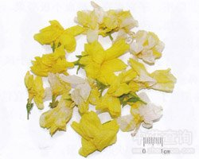

迎春花

拼音
Yínɡ Chūn Huā
别名
小黄花、金腰带、清明花、金梅花
来源
木犀科茉莉花属植物迎春Jasminum nudiflorum Lindl.，以叶及花入药。春季采花，夏季采叶。鲜用或晒干。
生境分布
多栽于庭园。分布山东、陕西、辽宁、江苏、浙江、贵州等地。
药材特点
落叶灌木，高达5米。枝细长，直立或成拱形，小枝平滑无毛，有四棱。复叶对生；小叶3片，卵形或长椭圆状卵形，长1～3厘米，先端尖，边缘有细毛，下面无毛；叶柄长5～10毫米。花淡黄色，先叶开花，着生于去年的枝条上，单生或腋生；花梗长约6毫米，被有狭长绿色的小苞；萼钟状，裂片6，线状，绿色，与萼简同长或较长；花冠管高脚碟形，径约2厘米，裂片6，长6毫米，筒部长12毫米；雄蕊2，着生于花筒内；子房2室。花期2～4月。 本植物的叶（迎春花叶）亦供药用，另详专条。
性状
性状鉴别 花皱缩成团，展开后，可见狭窄的黄绿色叶状苞片；萼片5-6枚，条形或长圆状披针形，与萼筒等长或较长；花冠棕黄色，直径约2cm。花冠筒长1-1．5cm，裂片通常6枚，倒卵形或椭圆形，约为冠筒长的1／2。气清香，味微涩。
性味
叶：苦，平。 花：甘、涩，平。
功能主治
叶：解毒消肿，止血，止痛。用于跌打损伤，外伤出血，口腔炎，痈疖肿毒，外阴瘙痒。 花：清热利尿，解毒。用于发热头痛，小便热痛，下肢溃疡。
用法用量
叶：2～3钱。外用鲜品捣烂敷患处或煎水坐浴。 花：1～3钱。外用研粉，调麻油搽敷患处。
化学成分
无化学成分数据
药理作用
1：无药理作用数据
摘录
《全国中草药汇编》